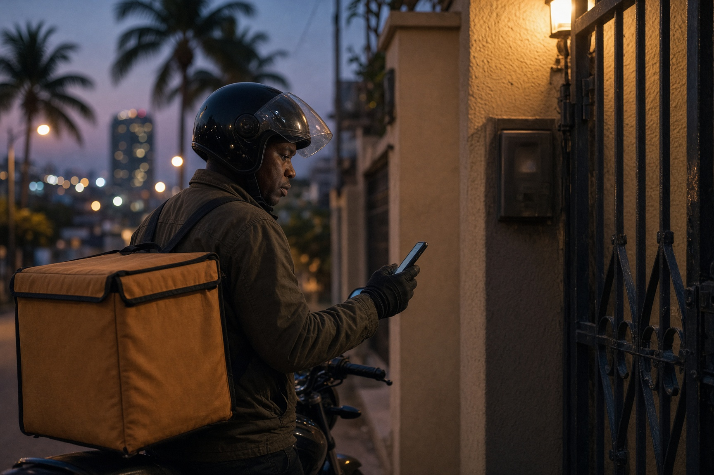

Sete Sete · Luanda
Manual de operações · v1
Da fatura à porta. Quem confirma o quê, como o motoboy trabalha sem aplicação, e como o tempo de 45 minutos se ajusta a Luanda.
01 · Visão geral
Ninguém instala uma aplicação extra. O cliente segue no site. O escritório e a cozinha usam o backoffice. O motoboy abre um link no WhatsApp, no telemóvel que já tem.
Cliente
Segue
Link único na fatura e no WhatsApp. Vê o estado e o mapa. Não confirma nada — só observa.
Escritório
Confirma
Pagamento, zona e tempo. Ajusta os 45 minutos se Luanda atrasar. Envia a rota ao motoboy.
Cozinha
Prepara
Marca «Começar» e «Pronto». Não confirma o pagamento nem a entrega.
Motoboy
Entrega
Dois toques no telemóvel: recebi e saí · entregue. Sem app, sem PIN do backoffice.
02 · Passo a passo
O cliente gera a fatura
O número da fatura nasce primeiro. O cliente paga com essa referência (Multicaixa, transferência ou dinheiro). Recebe o link de seguimento no ecrã e no WhatsApp.
O escritório confirma — não a cozinha
Verifica o comprovativo (ligado ao telefone e à fatura), aceita a zona e fixa o tempo. Só aqui a encomenda passa a Confirmado. A cozinha ainda não toca.
A cozinha marca o prato
No pass da cozinha: Começar (A preparar) e Pronto para o motoboy. A cozinha confirma comida, não pagamento nem entrega.
O escritório envia a rota ao motoboy
Um link privado, diferente do link do cliente, vai no WhatsApp. O motoboy abre no browser do telemóvel. Não entra no backoffice.
O motoboy confirma a recepção e sai
Um botão: «Recebi a encomenda · saí da casa». O mapa do cliente começa a andar. O estado passa a Em rota.
Na zona, depois na porta
«Estou na zona do cliente» e, ao entregar, «Encomenda entregue». A encomenda fecha. O cliente vê Chegou.
03 · Cliente
O link vive na fatura, na mensagem de WhatsApp e em setesete.ao/seguir.
Não precisa de conta.
Quem tem o link vê o estado. Pode partilhar com quem recebe em casa. Procura também pelo número da fatura (SS-…).
O mapa actualiza sozinho.
A cada poucos segundos o ecrã pergunta à casa. Quando o motoboy toca «saí» ou «entregue», o cliente vê no mesmo instante.
Fora de horas.
O pedido entra na mesma. A mensagem diz que está fechado (12h–22h) e que contactamos na abertura, por ordem de chegada. No WhatsApp da casa: «encomenda a ser confirmada — fora do horário».
04 · Escritório
O escritório. Não a cozinha. A encomenda chega sozinha ao backoffice quando o cliente gera a fatura. Confirmar é um acto humano: olhar o comprovativo, a zona, o tempo.
Backoffice
setesete.ao/ops
Acesso com utilizador e palavra-passe. A sessão cai ao sair da página. O público não vê este endereço no menu.
Ficha da encomenda
Uma referência
Comprovativo, telefone, fatura e mapa na mesma ficha. Confirmar pagamento e avançar para Confirmado.
Checklist do escritório
05 · Cozinha
Ecrã de cozinha, no backoffice. Três colunas: Confirmado · A preparar · Pronto. Dois botões. Nada de contas, nada de comprovativos.
Começar
A encomenda já foi aceite pelo escritório. A cozinha monta. O cliente lê «A preparar».
Pronto para o motoboy
O prato está no pass. O escritório envia o link. O motoboy só agora pode tocar «Recebi».
Se a cozinha se atrasar, o escritório não inventa um novo estado — aumenta o tempo de entrega. O cliente vê os minutos a serem honestos.
06 · Motoboy

O telemóvel que já usa. Um link. Três botões, no máximo.
Como recebe o trabalho
O escritório manda um WhatsApp com a fatura, a morada e o link da rota. O link é só do motoboy — o cliente não o tem, para ninguém marcar «entregue» por engano.
Na palma da mão
Nome, morada, zona, telefone (ligar ou WhatsApp), mapa, lista do pedido e se cobra em dinheiro ou já está pago.
Toque 1
Recebi · saí
Confirma que a encomenda saiu da casa. O cliente vê Em rota.
Toque 2
Na zona
Opcional, mas útil em Talatona e na Ilha. O cliente lê Próximo.
Toque 3
Entregue
Fecha a encomenda. Sem este toque, o ciclo não conta como feito.
07 · Tempo
Sim — o tempo é editável. 45 minutos é a referência interna (Talatona e zonas próximas). Cada zona já nasce com um viés: Ilha, Viana, Ingombota pedem mais. Se houver trânsito, chuva, controlo ou motoboy a faltar, o escritório muda o número na ficha. O cliente vê os minutos novos no seguimento.
Como decidir o número
| Situação | Tempo |
|---|---|
| Talatona, Benfica, Camama · dia limpo | 30–45 min |
| Maianga, Alvalade, Samba | 45–60 min |
| Ilha, Viana, hora de ponta | 75–90 min |
| Chuva, acidente, controlo na via | somar 15–30 min e escrever o motivo |
O motivo fica no histórico da encomenda («Tempo actualizado para 75 min · trânsito na Samba»). Assim o CRM não esquece o porquê.
08 · De bolso
Escritório
Confirma pagamento.
Confirma zona.
Edita o tempo se Luanda mandar.
Envia o link ao motoboy.
Nunca partilha o link do motoboy com o cliente.
Cozinha
Só toca no prato.
Começar.
Pronto.
Se atrasar, avisa o escritório — eles mudam os minutos.
Motoboy
Abre o WhatsApp.
Recebi e saí.
Na zona.
Entregue.
Se for dinheiro, cobra na porta. Se já pagou, não cobra.
Cliente
Fatura primeiro, depois paga.
Guarda o número SS-…
Segue no link.
Não precisa de app.
Sete Sete
Talatona · Luanda · Todos os dias, 12h – 22h
WhatsApp +244 945 407 841 · @setesete.ao